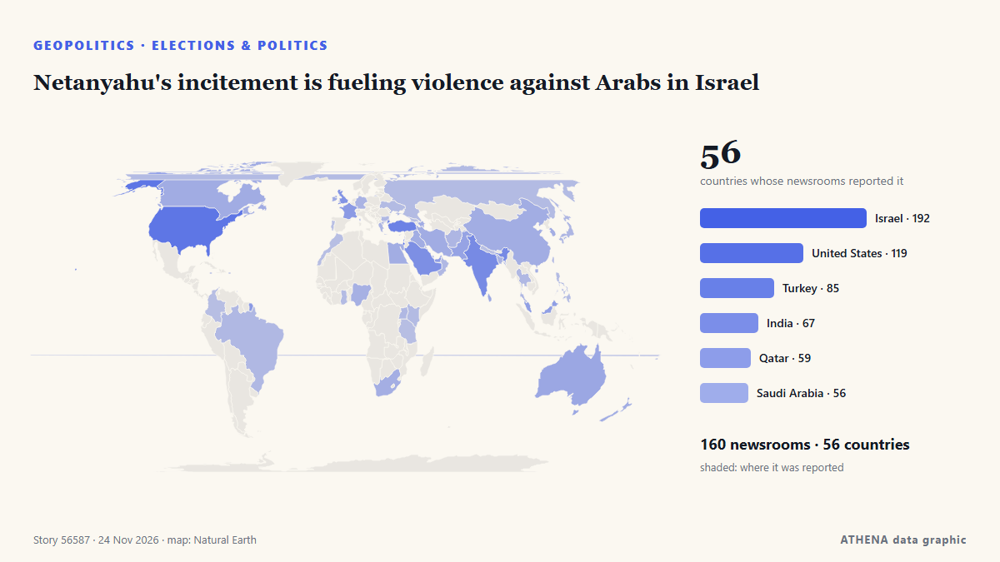

Εκλογές & πολιτική
ΧορηγούμενοΠαρουσιάζεται από  Cybernetics and Artificial Intelligence Lab Welcome to the Cybernetics and Artificial Intelligence Laboratory, established at the Department of Business Administration of the National and Kapodistrian University of Athens. The lab is headed by Professor Dimitrios Thomakos. The lab aims to do research that can be published in top venues. Our research uses tools and methods of Artificial Intelligence, and lies in the following areas: - Forecasting - Decision making - Cyber security - Finance We are always looking forward to collaborating with exceptional students!
Cybernetics and Artificial Intelligence Lab Welcome to the Cybernetics and Artificial Intelligence Laboratory, established at the Department of Business Administration of the National and Kapodistrian University of Athens. The lab is headed by Professor Dimitrios Thomakos. The lab aims to do research that can be published in top venues. Our research uses tools and methods of Artificial Intelligence, and lies in the following areas: - Forecasting - Decision making - Cyber security - Finance We are always looking forward to collaborating with exceptional students!
| 12 Νοε | 0 |
|---|---|
| 13 Νοε | 1 |
| 14 Νοε | 0 |
| 15 Νοε | 0 |
| 16 Νοε | 0 |
| 17 Νοε | 0 |
| 18 Νοε | 0 |
| 19 Νοε | 2 |
| 20 Νοε | 2 |
| 21 Νοε | 2 |
| 22 Νοε | 3 |
| 23 Νοε | 10 |
| 24 Νοε | 1 |
| 25 Νοε | 0 |
Οι τίτλοι των ειδήσεων παρουσιάζονται στα αγγλικά, όπως δημοσιεύτηκαν.

Netanyahu's incitement is fueling violence against Arabs in Israel
Former deputy governor tells Central Banking prime minister’s proposals are ‘stupid’ and ‘crazy’ από Central Banking
Armenia and Romania signed a declaration of strategic partnership
ArmInfo. Armenia and Romania signed a Declaration on Strategic Partnership. από Arminfo
Armenian PM and Trump launch TRIPP project
The launch of the TRIPP project will be officially announced on November 22, Armenian Prime Minister Nikol Pashinyan said at the DigiTec 2026 forum in Yerevan. από AzerNews
Gisele Pelicot 'shocked' after publisher uses nude images in book campaign
Pelicot said she would pursue legal action against Tinbad publishing house and the author. από The Straits Times
Italy conducts two archaeological missions in Azerbaijan
Italy can offer Azerbaijan high-quality products and services in the construction, agri-food, engineering and railway sectors, Italian Deputy Prime Minister and Minister of Foreign Affairs and… από AzerNews
Van Hollen backs populism in challenge to Schumer
Closed-door secret-ballot vote to take place next month as El-Sayed, Sanders rally behind Van Hollen. από Express Tribune
DNC Sets 12 Presidential Debates and Tells 2028 Hopefuls to Denounce “Dark Money”
Democrats are planning 12 presidential primary debates for the 2028 cycle, with the first set for June 2027. από The Hill
Indonesia’s Prabowo nominates 2 candidates to replace Raka as vice president
JAKARTA, Indonesia, Nov 23, (AP): Indonesian President Prabowo Subianto on Monday nominated the agriculture minister and a former foreign minister to replace Vice President Gibra... από Arab Times
Armenia proposes new constitution in step towards peace with Azerbaijan
Armenia published a draft proposal of a new constitution on Monday in what is a key development towards signing a formal peace agreement with its neighbour and longtime foe Azerbaijan. από Cyprus Mail
Burnham to ignore ‘stuck in the past’ ex-PMs as he hails UK’s EU reset
London: UK Prime Minister Andy Burnham accused predecessors who have warned him against reigniting the Brexit debate of being “stuck in the past” Monday, as he trumpeted his EU reset deal. από Gulf News
Democrats Win at Least 258 House Seats, Matching Their Biggest Majority Since 1992
Democrats got their dream of the House majority in the midterms, but their exact numbers in the lower chamber are still in flux with recounts and runoffs underway in some of the country’s closest… από The Hill
Belgian PM De Wever sets December 31 deadline for budget talks
BRUSSELS, Nov 23 - Belgium's Prime Minister Bart De Wever on Monday set a December 31 deadline for his government to reach an agreement on next year's budget, after another week of talks ended… από The Straits Times
2-term lawmaker nominated to lead interior ministry
Rep. Han Jun-ho, tapped to lead the interior ministry, is a two-term lawmaker of the ruling Democratic Party of Korea (DPK) who formerly worked as a news anchor. από The Korea Times
At 112, Denmark's oldest living person is a former Nazi
Celebrations marking Kirsten Schwalbe's record-breaking longevity and the publication of her biography have drawn attention to her past. από Le Monde (English)
Sheikh Hamdan shares Dubai Run aerial footage as more than 310,000 runners take over Sheikh Zayed Road
Dubai: A sea of runners stretching across Sheikh Zayed Road, jets painting the sky with colourful smoke trails and paragliders soaring above Dubai's skyline – these are some of the spectacular scenes… από Gulf News
Trump: Market down over $6T since Democrats won
United States President Donald Trump said on Sunday that since the Democratic Party's "rather strange" midterm election victory on November 3, "the Market is down more than 6 Trillion Dollars." από AzerNews
Trump on ’60 Minutes’ Reflects on Midterm Loss, Death and Forgiveness: ‘I Do Hate Some of My Enemies’
President Trump told “60 Minutes” that he blames Republican candidates and the war in Iran for the party’s midterm defeat, and acknowledged that his mass deportation policy was “too tough.” Sitting… από Variety
Rivers 2027: Lulu-Briggs campaign appoints Tam-George strategy, policy director
Austin Tam-George is a public policy expert and strategic communication specialist. από Premium Times